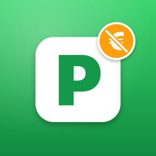

Datenschutzerklärung
Gratis Parken für iPhone und CarPlay · Stand: 26. Oktober 2026
Diese Erklärung beschreibt, welche Daten die App „Gratis Parken“ verarbeitet, wozu und an wen sie gehen. Kurz gesagt: Die App hat kein eigenes Nutzerkonto und keinen eigenen Server. Dein Standort bleibt auf deinem iPhone. Daten gehen nur an Apple (Karten, iCloud, App Store), an Google (Werbung) und an die Server der Städte, von denen die Parkzonen geladen werden.
1. Verantwortlicher
Reyes Casa Games
c/o IP-Management #36237
Ludwig-Erhard-Str. 18
20459 Hamburg
E-Mail: azilla91@gmail.com
2. Standort
Die App fragt nach deinem Standort, um ihn auf der Karte zu zeigen, Gratis-Straßen in deiner Nähe zu finden und dich zu navigieren. Während einer Navigation nutzt die App den Standort auch bei gesperrtem Display, damit die Ansagen weiterlaufen. Die Auswertung, ob eine Straße gratis ist, passiert ausschließlich auf deinem iPhone. Wir speichern deinen Standort nicht und übertragen ihn nicht an uns.
Rechtsgrundlage ist deine Einwilligung (Art. 6 Abs. 1 lit. a DSGVO), die du in den iPhone-Einstellungen jederzeit widerrufen kannst. Ohne Standortfreigabe funktioniert die App mit einem eingegebenen Ziel weiter.
3. Kartendienste von Apple
Karte, Ortssuche, Routen und Fußwege berechnet Apple Karten (MapKit). Dafür gehen deine Suchbegriffe sowie Start- und Zielkoordinaten an Apple. Apple verarbeitet diese Daten nach eigenen Angaben ohne Bezug zu deiner Apple-ID. Mehr dazu in der Datenschutzerklärung von Apple. Öffnest du eine Route in der App Apple Karten, gilt dort Apples Datenschutzerklärung.
4. Parkzonen der Städte
Für Berlin und München lädt die App die aktuellen Parkzonen von den offenen Datenportalen der Städte (gdi.berlin.de, geoportal.muenchen.de), höchstens einmal am Tag. Dabei erhält der jeweilige Server technisch bedingt deine IP-Adresse. Es werden keine weiteren Daten übertragen. Alle anderen Daten (Straßen aus OpenStreetMap, Parkzonen weiterer Städte) sind in der App enthalten und werden nicht nachgeladen.
5. Meldungen zu Straßen
Du kannst melden, dass eine als gratis gezeigte Straße doch etwas kostet, nur für Anwohner ist oder dass Parken dort nicht erlaubt ist, oder bestätigen, dass sie gratis ist.
- Über iCloud: Die Meldung wird in der öffentlichen iCloud-Datenbank (CloudKit) der App gespeichert: Art der Meldung, Straßenname, Koordinaten der Straße, Stadt und Zeitpunkt. Dazu speichert Apple eine anonyme, nur für diese App gültige Kennung deines iCloud-Kontos. Wir sehen weder deinen Namen noch deine Apple-ID oder E-Mail-Adresse. Andere Nutzer sehen keine einzelnen Meldungen, nur deren Wirkung: Melden zwei Personen eine Straße, schlägt die App sie nicht mehr vor. Meldungen zählen ein Jahr lang.
- Per E-Mail: Ist iCloud nicht verfügbar, öffnet die App deine Mail-App mit einer vorbereiteten Nachricht (Art der Meldung, Straße, Stadt, Koordinaten, App-Version). Sie wird nur verschickt, wenn du sie selbst absendest. Wir erhalten dann deine E-Mail-Adresse und den Inhalt der Mail.
Rechtsgrundlage ist unser berechtigtes Interesse an korrekten Parkdaten (Art. 6 Abs. 1 lit. f DSGVO). Freitext kannst du nur in der E-Mail eingeben. Meldungen über iCloud löschen wir auf Anfrage.
6. Werbung (Google AdMob)
Die App zeigt Werbebanner über Google AdMob, einen Dienst der Google Ireland Limited, Gordon House, Barrow Street, Dublin 4, Irland. Während der Navigation und in CarPlay wird keine Werbung gezeigt.
- Einwilligung: Beim ersten Start fragt die App über Googles Einwilligungsdialog (User Messaging Platform), ob Google personalisierte Werbung zeigen und dafür Daten nutzen darf. Danach fragt iOS, ob die App dich über Apps anderer Unternehmen hinweg verfolgen darf (App-Tracking-Transparenz).
- Verarbeitete Daten: IP-Adresse, Geräte- und App-Informationen, ungefährer Standort aus der IP-Adresse, Interaktionen mit Anzeigen und, nur mit deiner Erlaubnis, die Werbe-ID deines iPhones (IDFA). Google kann diese Daten auch außerhalb der EU, insbesondere in den USA, verarbeiten.
- Ohne Einwilligung zeigt die App nicht personalisierte Werbung. Die App funktioniert in beiden Fällen gleich.
- Widerruf: In der App unter Optionen → „Datenschutz-Einstellungen für Werbung“, die Tracking-Freigabe in den iPhone-Einstellungen unter Datenschutz & Sicherheit → Tracking.
Rechtsgrundlage für personalisierte Werbung ist deine Einwilligung (Art. 6 Abs. 1 lit. a DSGVO, § 25 Abs. 1 TDDDG), für nicht personalisierte Werbung unser berechtigtes Interesse an der Finanzierung der App (Art. 6 Abs. 1 lit. f DSGVO). Mehr dazu: Wie Google Daten von Apps verwendet, Datenschutzerklärung von Google.
7. In-App-Kauf „Werbefrei“
Der Kauf läuft vollständig über den App Store von Apple. Wir erhalten keine Zahlungsdaten und keine Angaben zu deiner Person, nur Apples Bestätigung, dass der Kauf gültig ist. Es gilt die Datenschutzerklärung von Apple.
8. Daten auf deinem iPhone
Auf deinem iPhone gespeichert und nicht übertragen werden: deine Einstellungen (z. B. Sprachansagen, Navigationsart, Vorlaufzeit der Erinnerung), die zuletzt genutzte Stadt, geladene Parkzonen und Meldungen sowie Erinnerungen, die du dir stellst. Erinnerungen sind lokale Mitteilungen; dafür fragt die App um Erlaubnis. Wenn du die App löschst, werden diese Daten mit gelöscht.
9. Was die App nicht tut
- Kein Nutzerkonto, keine Registrierung
- Keine eigenen Analyse- oder Statistikdienste
- Kein Verkauf von Daten
- Keine Speicherung deiner Fahrten oder Parkvorgänge
10. Deine Rechte
Du hast das Recht auf Auskunft (Art. 15 DSGVO), Berichtigung (Art. 16), Löschung (Art. 17), Einschränkung der Verarbeitung (Art. 18), Datenübertragbarkeit (Art. 20) und Widerspruch gegen Verarbeitungen auf Grundlage berechtigter Interessen (Art. 21). Eine Einwilligung kannst du jederzeit mit Wirkung für die Zukunft widerrufen. Schreib uns dazu an azilla91@gmail.com.
Du kannst dich außerdem bei einer Datenschutz-Aufsichtsbehörde beschweren, etwa bei der Behörde deines Bundeslandes.
11. Änderungen
Ändert sich die App so, dass andere Daten verarbeitet werden, passen wir diese Erklärung an. Es gilt die jeweils hier veröffentlichte Fassung.